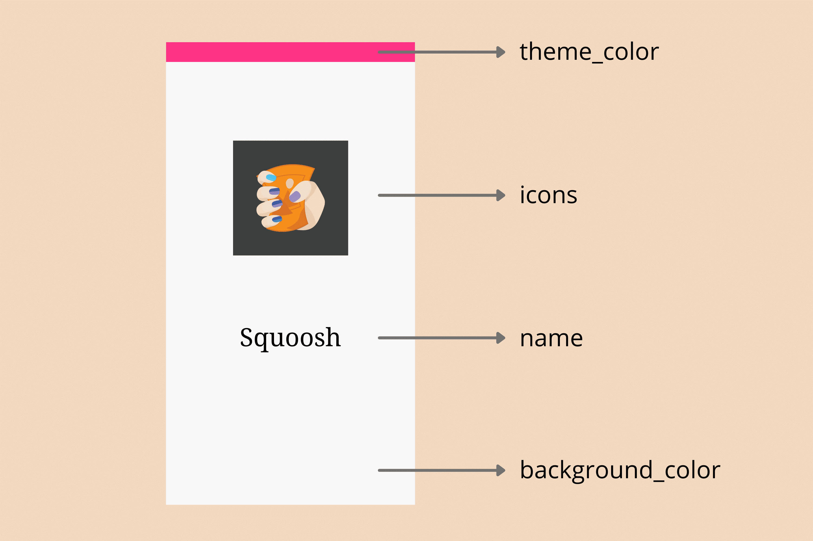
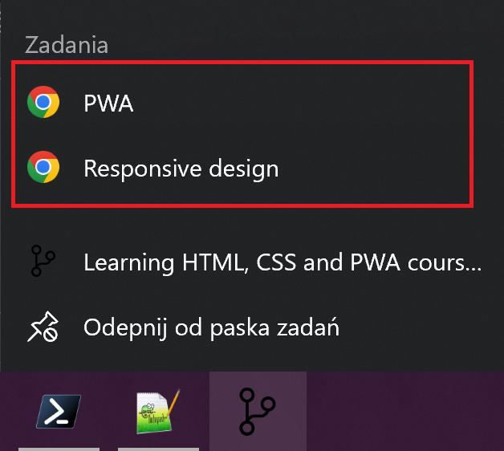

This page was made installable just by correctly wiring up the manifest file and filling it with relevant information. After that, this site was detected as "installable", thus becoming PWA.
Below are further datails of building PWAs:
In order to apply different styles we can use media features, such
as display-mode.
This is example of the media feature, depending on it this paragraph has different background:
Note that standalone mode matched also
@media (display-mode: browser) query. On the other day,
it did not, play with below snipper to verify (style should take
precedence, when matched against above colorful paragraph):
Selection does not work very well in PWAs, so it is usually recommended to use
.unselectable {
user-select: none;
}Sometimes, in PWAs (from Chrome on Android), PWAs have pull to refresh (when page is puled down, it refreshes) - this is not desirable in PWAs, so it can be disabled with
body {
overscroll-behavior-y: contain;
}When registering service worker, it will act as a proxy between backend server and the PWA - service workter can decide where to reach for the resource.
Not all browser support service workers, but if it dies, we need to register it as follows:
if ('serviceWorker' in navigator) {
navigator.serviceWorker.register("/serviceworker.js");
}Below info indicates whether your browser supports service workers:
Service worker controls navigation for any route where the service
worker is located or subroutes. So for example, service worker for
this page will control requests to /pwa or
/pwa/othersite, but not root path / or
/html-notes route.
In order to update service worker, we must not rename it, and on client side - we need to navigate away from all occurences of the page (PWAs, browser tabs). Then re-navigate to desired page.
Service workers are terminated when they've been idle for a few seconds or if they've been busy for too long.
We can use this API to cache various types of resources, such as CSS files, fonts, etc. The cache also includes headers for the HTTP requests (for CSSes and other).
Caching can be chieved with following code:
caches.open('pwa-practice-assets').then((cache) => {
cache.add('pwa.css')
})
See example in this page (JS file contains cache setting) and this
can be inspected by going to Application tab in
DevTools, there will be Cache storage on the left pane.
See the Cache object documentation for further details.
Thanks to service worker's fetch event, we have ability
to proxy all reuqests in service worker's scope (so current route or
subroutes). For example:
self.addEventListener("fetch", event => {
console.log(`URL requested: ${event.request.url}`);
});
Log can be inspected in the dev tools (above is the real
implementation). Moreover, below we have link to styles
not-existing.css, which do not exist - we use service
worker "proxying" to serve the CSS file.
If service worker proxied request for non-existing CSS file, this paragraph should have bold and purple font, with pink background.
Inside fetch event handler in service worker,
FetchEvent.respondWith MUST be called synchronously. So
no awaits can be used before it, neither can it be used
inside then method of a Promise. Luckily,
FetchEvent.respondWith accepts
Response object or Promise object, that
resolves to Response object. So we can produce response
asynchronously inside FetchEvent.respondWith method.
This page uses service worker and Cache API - all can be inspected
in dev tools - in console and in appropriate places in
Application tab.
Caution: The Response's body is a
ReadableStream that can only be consumed once. That
means that if you call fetch() to deliver the response
to the PWA because the asset was not cached, you cannot reuse the
same response for updating it in the cache. You need to call
Response.clone() to use it twice.
To interact with IndexedDB, the recommended approach is to use idb library
Browsers allow much disk space to be used by sites. Space used by the website consitutes of Cache Storage, Indexed DB, Web Storage and even service worker file.
There is StorageManager API to get some info - how much
space the site uses, how much is left to use.
Browser can be asked to prsist the data stored in browsser's whatever storage (inlcuding service workers), to not be removed upon long inactivity (no usage of the data) or on storage pressure. Users can still forcibly remove the data, but browser will persist data (when asked and granted).
To request peristent storage, we need to call
StorageManager.persist() method, which can be accessed
with navigator.storage object. For example:
async function persistData() {
if (navigator.storage && navigator.storage.persist) {
const result = await navigator.storage.persist();
console.log(`Data persisted: ${result}`);
}
}
You can also check if persistent storage is already granted in the
current origin by calling StorageManager.persisted().
On these platforms, we need to include
<link rel="apple-touch-icon" href="/icons/ios.png">to instruct the browser/system to use that icon as application icon. If not specified, icon will be screenshot of the PWA at the moment of installation.
Manifest file defines how the app should behave, when installed as
native app. This file should have
.webmanifest extension, but in general
manifest.json is used broadly, as long as it is linked
from HTML correctly. One can manifest file for this page and how it
is linked in root page (rel="manifest" attribute on
link element suffices for correct linking the manifest
file).
Manifest file should be linked to from every HTML page.
When installed on Android, for instance, fields from manifest file are used to create splash screen (shown when launching app). Here is a breakdown:

Safari on iOS and iPadOS does not use the web app manifest to
generate splash screens. Instead, they use an image linked from a
proprietary
<link> element similar to how they handle icons:
<link rel="apple-touch-startup-image"
href="ios-startup.png">
The challenge is that the startup image must have the exact window size that your PWA will have on opening. So, different iOS and iPadOS devices will need different images.
Different versions of the launch image can be set with a media query inside the media attribute:
<link rel="apple-touch-startup-image" href="ios-startup.png"
media="orientation: portrait">
<link rel="apple-touch-startup-image" href="ios-startup-landscape.png"
media="orientation: landscape">Below fields are optional in manifest file:
langdiroreitnationSuch manifest file's fields are used to provide promotional information about PWA, for instance, in install flows, listings and search results:
descriptionscreenshotssrc,
type and sizes (similar to the
icons object) intented to showcase the PWA. There
are no size restrictions.
categoriesiarc_rating_id
Installation experience can be greatly enhanced when using
promotional fields. On Android, for example, if your PWA is
installable and you provide values for at least
description and screenshots fields, the
installation dialog experience transforms from a simple "Add to the
home screen" info bar, to a richer installation dialog similar to
the one from an app store.
shortcuts in manifest fileWe can enhance PWA by adding shortcuts in manifest file, which add folliwng shortcuts to "quick menu" in task bar (on Windows and Android)
Depending on OS and browser, and on manifest file (promotional files), browser can show simple bar to install the app, enhanced UI using promotional fields to create installation dialog (as for native apps).
More advanced technique is to listen to
beforeinstallprompt, which is fired by the browser,
when it detects that the page is installable (so passes
installability criteria for PWAs).
Here's small implementation:
// This variable will save the event for later use.
let deferredPrompt;
window.addEventListener('beforeinstallprompt', (e) => {
// Prevents the default mini-infobar or install dialog
// from appearing on mobile
e.preventDefault();
// Save the event because you'll need to trigger it later.
deferredPrompt = e;
// Show your customized install prompt for your PWA
// Your own UI doesn't have to be a single element, you
// can have buttons in different locations, or wait to prompt
// as part of a critical journey.
showInAppInstallPromotion();
});CAUTION: Not all browsers support this event.
To prompot user for installation, use
deferredPrompt.prompt() method. But this method can be
called only once. If user dismisses it, it needs to wait until next
time, when beforeinstallprompt event is fired.
The event won't fire when:
To see user's choice, we can use below code:
const { outcome } = await deferredPrompt.userChoice;
Chromium browsers trigger the appinstalled event on the
window object. The event is fired when the user accepts
the install, whether action was triggered by a custom install button
or by the browser.
To avoid reading user agent string, we can check
navigator.standalone property, which is available only
on the WebKit engine on iOS and iPadOS.
navigator.standalone is undefined -
user is neither on iOS or iPadOs
navigator.standalone is false - user
opened PWA in browser
navigator.standalone is trye - user is
using PWA as standalone app.
Apple does not suport display: fullscreen, as Android
does. In order to provide this experience we need to use
meta tag:
<meta name="apple-mobile-web-app-status-bar-style"
content="black-translucent">